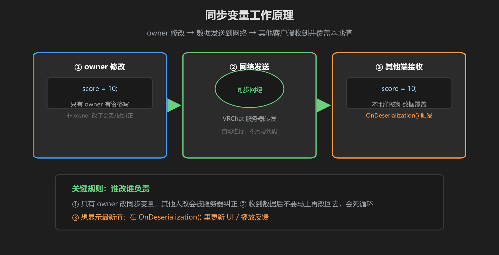
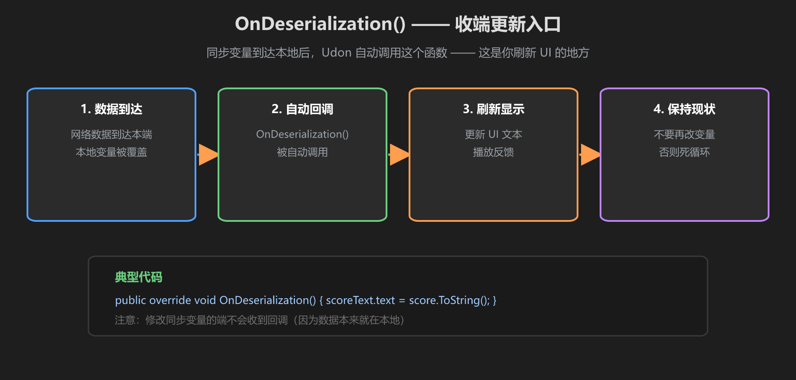

第 2 篇：同步变量 — [UdonSynced] 与 OnDeserialization
同步变量是网络同步的基础。这一篇讲清楚三件事：怎么声明、谁有权改、收到数据后做什么。
1. 声明同步变量
在变量上贴 [UdonSynced] 属性，它就变成同步变量：
[UdonSynced] public int score; // 同步的分数
[UdonSynced] public bool isPlaying; // 同步的开关能同步的类型包括 int、float、bool、string、Vector3 等常见类型。它的原理很简单：owner 修改 → 打包发送到网络 → 其他端收到后覆盖本地值。

图：owner 写 → 网络发送 → 其他端接收覆盖，全自动
2. 谁改谁负责：只有 owner 能写
同步变量只有 owner 能修改。非 owner 写了会怎样？改动不会被服务器认可，甚至会被纠正回去 —— 所以写代码前一定要判断自己是不是 owner：
public void AddScore()
{
// 只有 owner 才真正加分
if (!Networking.LocalPlayer.IsOwner(gameObject)) return;
score += 1;
}别硬改：如果想让别的玩家加分，应该先请求所有权（第 4 篇），而不是在对方端直接改变量 —— 那是改不进去的。
3. OnDeserialization()：收到数据后做什么

图：数据到达 → 自动回调 → 你在这里刷新 UI
当其他端收到同步数据时，Udon 会把新值写进变量，然后自动调用 OnDeserialization()。这是你更新 UI、播放反馈的地方：
public override void OnDeserialization()
{
// 同步数据到了，刷新计分板文字
scoreText.text = "分数：" + score.ToString();
}注意：自己改变量的那端不会收到回调（数据本来就是自己写的），所以 owner 端要自己顺手刷新 UI。
4. [SerializeField] 与 [UdonSynced] 组合
两个属性可以同时用：[SerializeField] 让变量在 Inspector 里可见可配（UdonSharp 里必须用它才能在面板显示），[UdonSynced] 让它同步。顺序无所谓：
[SerializeField, UdonSynced] public int startScore; // 面板可配 + 网络同步5. 完整示例：同步分数
using UdonSharp;
using UnityEngine;
using VRC.SDKBase;
public class ScoreComponent : UdonSharpBehaviour
{
[SerializeField] private TMPro.TextMeshProUGUI scoreText;
[SerializeField, UdonSynced] private int score;
public override void OnDeserialization()
{
// 其他端收到新分数，刷新显示
scoreText.text = "分数：" + score.ToString();
}
public void AddScore()
{
if (!Networking.LocalPlayer.IsOwner(gameObject)) return;
score += 1;
scoreText.text = "分数：" + score.ToString(); // owner 自己刷新
}
}常见坑：收到数据后在 OnDeserialization 里又去改同一个同步变量，会造成「同步回环」（A 发 → B 改回 → A 又收到）。回调里只读、只刷新显示。
学前检查清单
- 能写出带 [UdonSynced] 的变量声明
- 知道只有 owner 能修改同步变量
- 会在 OnDeserialization() 里刷新 UI
- 知道 [SerializeField] 和 [UdonSynced] 可以组合使用